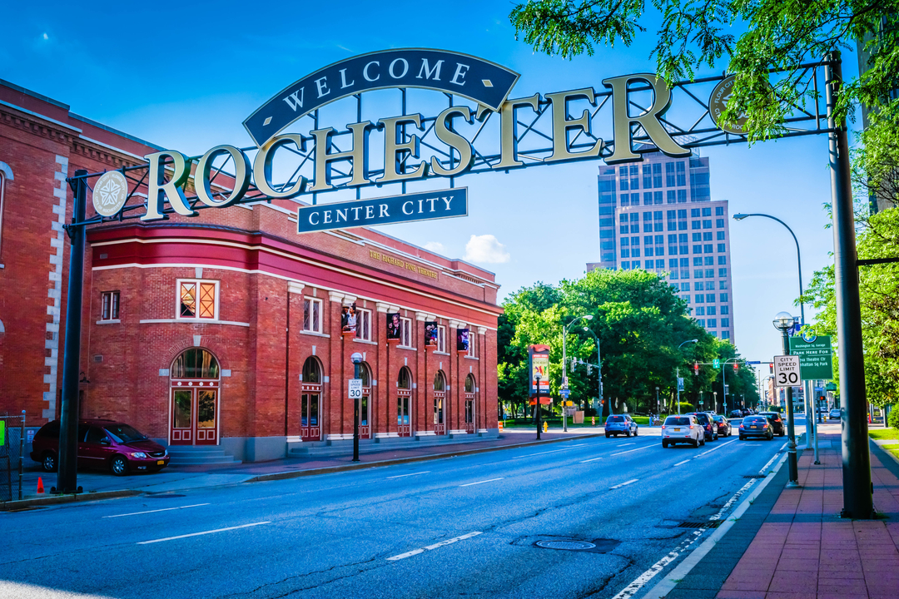

So what's the real tea about the ROC?

Answer Key
- C. From flour mills to flower nurseries, we've done it all. Bonus if you also knew about The Young Lion of the West!
- A. All of these restaurants are legendary in the area, but Nick Tahou Hots came up with this culinary hodgepodge for the college crowd more than 50 years ago, trademarking the name of the dish in 1992.
- A. This does exist in Virginia City, Nevada, but is not at all affiliated with Rochester.
- B. Malik Evans is the mayor of Rochester, NY, as of January 1, 2022.
- F. Tyler James Williams is the only actor on this list not from Rochester; however, Vincent Martella, his co-star on Everybody Hates Chris, was born here!
- C. All the rest of these films were shot in and around Rochester, NY!
- H. You knew this was a "gimme" question, I'm sure. Rochester has attracted big businesses from far and wide since its inception. Want to stay up to date with business developments in the area? Visit here!
- False. Trick question! This existed once upon a time not too long ago, but alas, was fairly short-lived. Luckily, Toronto remains a three-hour drive away. Want a halfway stop? Consider checking out Buffalo or Niagara Falls!
Think you can do better?
Source